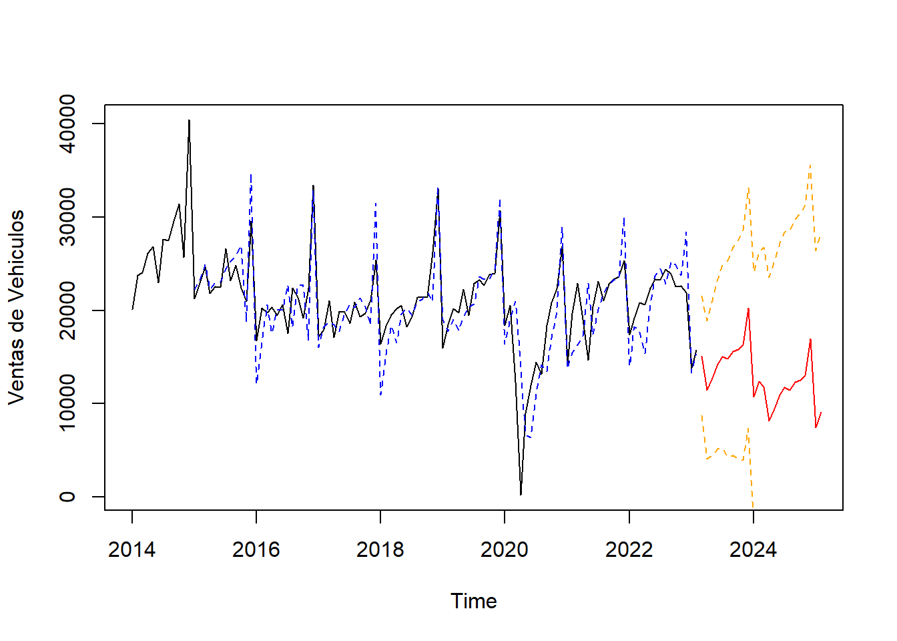
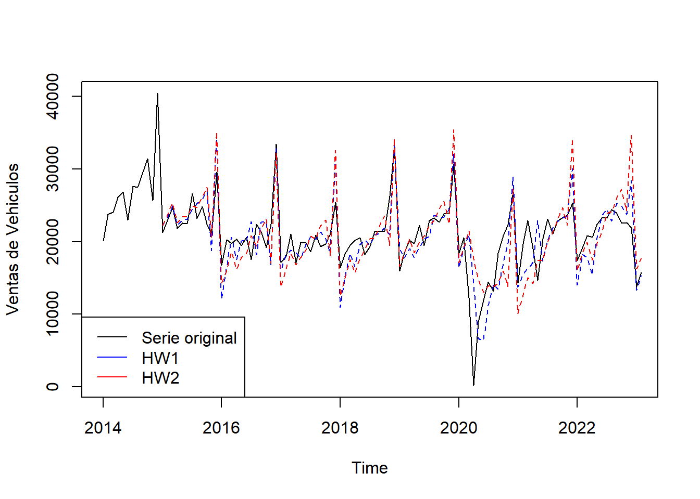
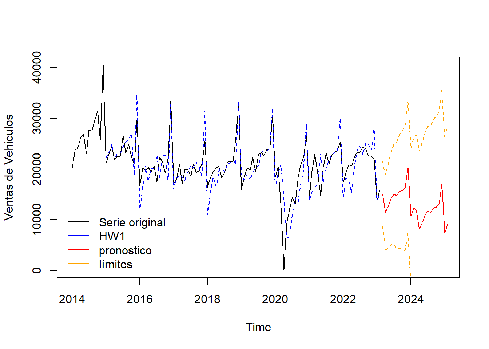

Chapter 6 Predicciones
Ambos ajustes parecen seguir bastante bien nuestros datos, así que ahora es el momento de ver cómo se desempeñan al predecir las ventas futura de vehiculos Usando la función “predict”, necesitaremos especificar cuántos puntos de datos queremos predecir en el futuro. Aquí, usaremos un valor de 24 para proyectar 2 años hacia el futuro (recuerdemos, esta es una serie temporal mensual). También nos gustaría tener una noción de los “intervalos de error” asociados con la predicción para tener una idea de nuestra confianza en la predicción. Para hacer esto, establecemos “prediction.interval=TRUE” y el nivel del intervalo de confianza (seleccionado aquí como 0.95). Una vez más, mostraremos un gráfico que incluya la cola de nuestros datos existentes y las nuevas predicciones.
HW1.pred <- predict(HW1, 24, prediction.interval = TRUE, level=0.95)
#gráfica
plot(veh, ylab="Ventas de Vehiculos", xlim=c(2014,2025))
lines(HW1$fitted[,1], lty=2, col="blue")
lines(HW1.pred[,1], col="red")
lines(HW1.pred[,2], lty=2, col="orange")
lines(HW1.pred[,3], lty=2, col="orange")
6.1 Ajuste de la estacionalidad
Cuando realizamos ajustes, también tenemos la opción de ajustar el comportamiento de la componente de estacionalidad. Los ajustes estándar de Holt-Winters utilizan una estacionalidad aditiva, lo que significa que asumen que la amplitud de cualquier componente de estacionalidad es relativamente constante a lo largo de la serie. Sin embargo, si utilizamos una estacionalidad multiplicativa, permitimos que las variaciones estacionales (amplitud) crezcan con el nivel general de los datos. Para ver cómo funciona esto en nuestro caso de ventas de vehículos, crearemos un nuevo ajuste, realizaremos predicciones en el futuro y las compararemos con nuestro ajuste aditivo de HW1.
HW3 <- HoltWinters(veh, seasonal = "multiplicative")
HW3.pred <- predict(HW3, 24, prediction.interval = TRUE, level=0.95)
plot(veh, ylab="Ventas de Vehiculos", xlim=c(2014,2025))
lines(HW3$fitted[,1], lty=2, col="blue")
lines(HW3.pred[,1], col="red")
lines(HW3.pred[,2], lty=2, col="orange")
lines(HW3.pred[,3], lty=2, col="orange")
Como podemos ver, la predicción se parece bastante a nuestro resultado de HW1, los intervalos de confianza muestran una tendencia más conservadora. Para este conjunto de datos, parece que el ajuste multiplicativo podría ser una mejor opción.
6.2 Uso de Forecast:
Utilizando nuestro ajuste de Holt-Winters HW1 anterior, podemos utilizar “forecast” para hacer nuevas predicciones e incluir intervalos de confianza del 80% y 95%.
library(forecast)
HW1_for <- forecast(HW1, h=24, level=c(80,95))
#grafica
plot(HW1_for, xlim=c(2014, 2026))
lines(HW1_for$fitted, lty=2, col="purple")